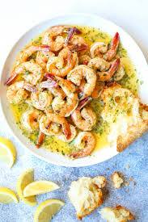
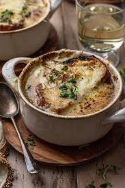

For Intercontinental dish lovers, we serve:
Garlic Butter Shrimp: Jumbo shrimp sautéed with garlic and butter, served with crusty bread for dipping

Caprese Salad: Fresh mozzarella, juicy tomato slices, and basil leaves drizzled with balsamic glaze

Crispy Calamari: Tender calamari rings fried to a crispy golden brown, served with spicy marinara sauce

French Onion Soup: Classic onion soup topped with melted Gruyere cheese

Caesar Salad: Romaine lettuce, croutons, Parmesan cheese, and our house-made Caesar dressing

Tomato Basil Soup: Creamy tomato soup with fresh basil and a dollop of crème fraîche

Grilled Ribeye: 12-ounce ribeye steak seasoned and grilled to perfection, served with garlic mashed potatoes and sautéed vegetables

Linguine Carbonara: Linguine pasta tossed with pancetta, Parmesan cheese, and a creamy egg sauce

Chicken Parmesan: Breaded chicken breast topped with marinara sauce and melted mozzarella cheese, served with a side of spaghetti

Seafood Risotto: Creamy risotto with shrimp, scallops, and calamari, finished with a drizzle of truffle oil

Vegetarian Paella: Spanish rice cooked with saffron, vegetables, and a variety of beans, served with crusty bread